How to work the app. For why the numbers are what they are, see the theory manual instead.
It opens ready. A module is already selected and a result is already computed. Nothing needs creating first.
You choose the branch. Where a relation has more than one physically distinct case, the choice is a control you set. Nothing is picked for you quietly.
Units are how you read, not what you compute. The toolbar switches SI and Gaussian. It re-spells the numbers; it never changes the physical situation.
Electrostatics · Field and potential of a charge configuration
The electric field and the potential produced at any point in space by a set of stationary point charges, obtained by adding up the contribution of each charge separately.
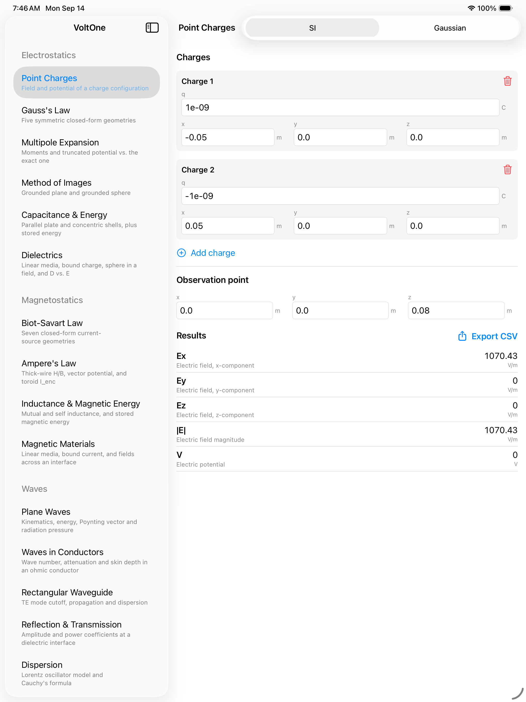
Each of these is a control on the screen. The app never picks one for you: a branch chosen silently is the easiest way for a correct calculation to hand you a wrong answer.
| Choice | Use it when |
|---|---|
| Where the potential is zero | Always, and it must be visible. Different choices of the zero give potentials differing by a constant, with identical fields and identical differences, so this is a convention rather than two competing answers. But an absolute potential printed without saying where its zero is is a number with no meaning, and every formula in this module assumes that zero is at infinity. |
| Symbol | What it is |
|---|---|
qᵢ | The i-th source charge: one of the charges whose positions you specify, and which this module holds still. |
Q | A test charge: the one whose force or motion you want, rather than one of the sources. It divides out of the definition of the field, which is why the field does not depend on it. |
r | The field point: the place where you are asking what the field or the potential is, given as a position measured from the origin. |
r′ᵢ | The source point of the i-th charge: where that charge sits, measured from the same origin. A prime always marks a source here, never a derivative. |
Rᵢ | The separation distance: the straight-line distance from the i-th charge to the field point. It is not the distance from the origin, and confusing the two makes every result wrong. |
R̂ᵢ | The direction of that separation, as a unit vector pointing from the charge towards the field point. |
ε₀ | The permittivity of empty space: the constant that makes the units of force, charge and distance agree with each other. |
E | The electric field: the force a unit test charge would feel at the field point. A vector at every point in space. |
V | The potential: a single number at each point, obtained by integrating the field inwards from an agreed zero. Only differences of it mean anything. |
O | The reference point: the place where the potential is declared to be zero. Every potential formula in this module takes it to be infinitely far away. |
Electrostatics · Five symmetric closed-form geometries
Closed-form fields for the handful of charge arrangements symmetric enough that the total flux through a well-chosen closed surface can be turned directly into the field strength on it.
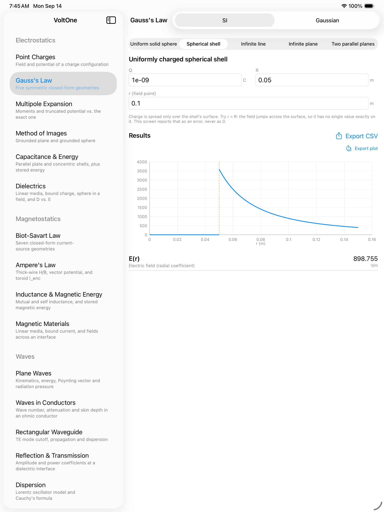
Each of these is a control on the screen. The app never picks one for you: a branch chosen silently is the easiest way for a correct calculation to hand you a wrong answer.
| Choice | Use it when |
|---|---|
| Uniform solid sphere at its own surface | At the surface radius. There is no surface charge there, so the perpendicular component is continuous: the inside and outside expressions give the same value and either may be used. This is the safe case. |
| Spherical shell at its own surface | At the shell radius. The field jumps across the shell by the surface charge over the permittivity, and the material assigns no value to the surface itself. This must be presented as a genuine discontinuity with both one-sided values shown; picking a side silently hands the user a number that is wrong by the full jump. The contrast with the solid sphere, where the same radius needs no choice at all, is the single most useful thing in this module. |
| Inside or outside, for every piecewise geometry | Whenever a radius is entered. The solid sphere, the shell and the pair of concentric shells all have region-dependent answers, and the region has to be a visible part of the result rather than an inference the user is left to make. |
| Which side of an infinite plane | For the single sheet. One magnitude, two directions: the field points away from the sheet on both sides, so the sign of the answer depends on which side you are on. The sheet itself carries no assigned value. |
| Three regions for a pair of parallel sheets | Left of both, between them, right of both. The two outer regions give exactly zero, which users routinely mistake for an error. |
| Symbol | What it is |
|---|---|
Φ | Electric flux: the field summed over a surface, weighted by how squarely it crosses that surface. |
Q_enc | The total charge sitting inside the closed surface you chose. Charge outside it contributes nothing to the total flux. |
ρ | Charge per unit volume. |
σ | Charge per unit area, on a surface. |
λ | Charge per unit length, along a line. |
R | The radius of the charged object itself: the sphere, the shell, the cylinder. |
r | Distance from the centre, for the spherical cases. |
s | Distance from the axis, for the cylindrical and line cases. |
n̂ | A unit vector pointing away from the charged surface, out of whichever side you are on. |
ε₀ | The permittivity of empty space. |
q | The total charge carried by the object. |
Electrostatics · Moments and truncated potential vs. the exact one
A systematic way of describing a bounded lump of charge as seen from far away: a series whose first non-vanishing term gives the leading potential, and whose later terms refine it.
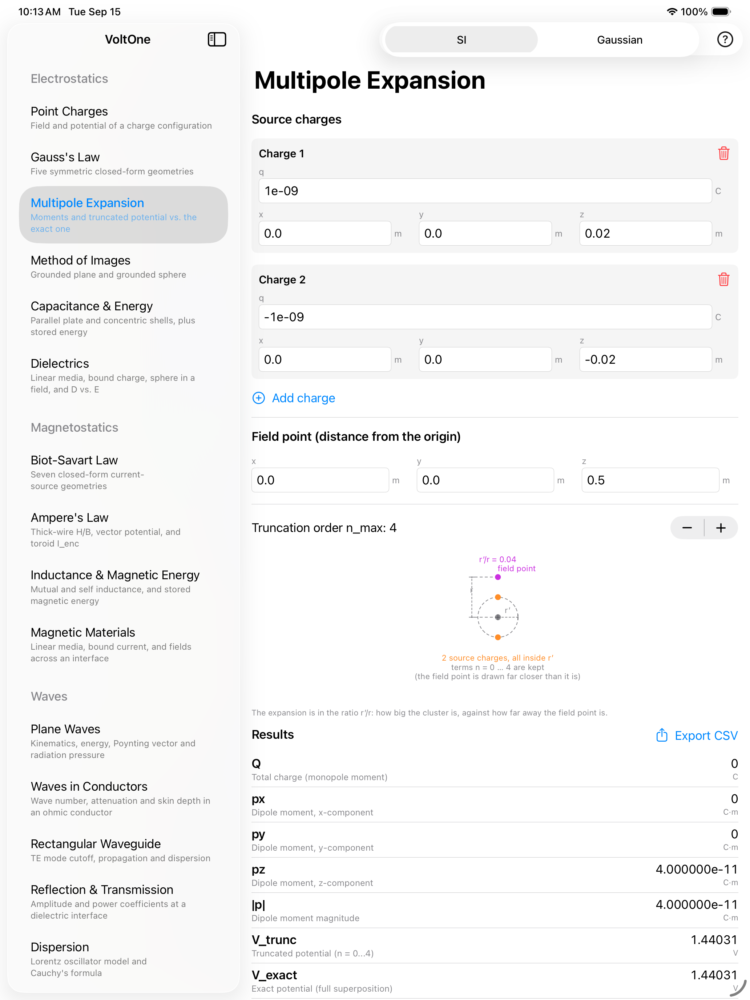
Each of these is a control on the screen. The app never picks one for you: a branch chosen silently is the easiest way for a correct calculation to hand you a wrong answer.
| Choice | Use it when |
|---|---|
| Where to stop the series | Every evaluation. Truncation order is the user's choice, not a hidden default: it changes the answer, and since no remainder bound exists, the only honest guidance the app can give is to show the size of the terms it kept. |
| A dipole made of two charges, or an ideal dipole | Whenever a dipole is being specified. Give a charge and a separation, and you have a real pair whose potential contains higher terms as well; give a dipole moment directly, and you have the idealisation. They agree far away and are entirely different close up. The idealisation is a limit in which the separation goes to zero while the charge goes to infinity with their product fixed, and even in that limit an infinitesimal region near the centre behaves unlike the formula. |
| Dipole field with or without the term at the origin | Whenever the region of interest contains the dipole itself. Integrating the plain form over such a region contradicts the known average field; the form with the extra term is the one that does not. Outside the origin the two are identical. |
| Which moment leads | Determined by the distribution, but it must be shown rather than assumed. With net charge, the leading behaviour is the total charge. With no net charge, the dipole leads. With neither, the quadrupole. The leading non-vanishing moment is also the only one that does not depend on where the origin was placed. |
| Symbol | What it is |
|---|---|
r | The field point: how far away you are looking from, measured from the origin you chose. |
r′ | A source point: somewhere inside the charge distribution, measured from the same origin. The integrals in this module run over these, never over the field point. |
θ′ | The angle between the direction you are looking from and the direction of the source point being integrated over. It depends on both, and is not a polar angle of any fixed coordinate system. |
θ | Used only for the field of a single dipole, where the polar axis is deliberately aligned with the dipole moment: then it is the ordinary polar angle measured from that axis. |
ρ | Charge per unit volume at a source point. |
Q | Total charge: the whole distribution added up. The first moment in the hierarchy. |
p | Dipole moment: the source positions averaged with charge as the weight. A vector, and the second moment in the hierarchy. |
Qᵢⱼ | Quadrupole moment: a three-by-three array whose definition deliberately subtracts off a spherically symmetric part, so that it records only how the distribution departs from being round. |
Pₙ | The polynomial of order n that appears as the coefficient of each power in the expansion. The same family also solves the angular part of the potential problem in spherical coordinates. |
n | The order of a term: zero for the total charge, one for the dipole, two for the quadrupole, and so on upward. |
d | For a two-charge dipole, the vector running from the negative charge to the positive one. |
δᵢⱼ | One when the two indices match, zero when they do not. |
ε₀ | The permittivity of empty space. |
Electrostatics · Grounded plane and grounded sphere
Two geometries, a grounded plane and a grounded sphere, where the effect of a conductor on a nearby point charge can be reproduced exactly by a single fictitious charge placed on the far side of the surface.
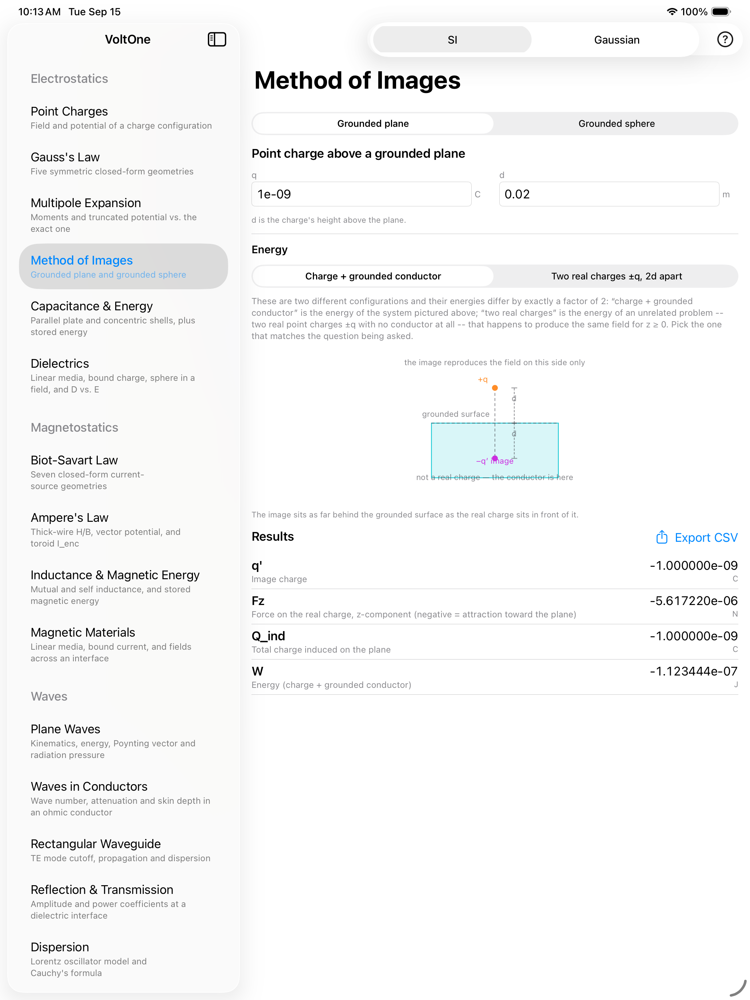
Each of these is a control on the screen. The app never picks one for you: a branch chosen silently is the easiest way for a correct calculation to hand you a wrong answer.
| Choice | Use it when |
|---|---|
| Energy: two real charges, or a charge and a conductor | Whenever the plane geometry's energy is asked for. The two differ by exactly a factor of two, and every other quantity in the problem, the potential in the upper region, the force, the field, is identical between them. This is the single easiest place in the module to hand someone a wrong number that looks entirely reasonable, so the app must say which arrangement it is reporting rather than offering one unlabelled energy. |
| Plane or sphere | At the start. The two share no parameters: the plane is set by a perpendicular distance, the sphere by a radius and a distance from its centre. Feeding a surface-to-charge distance where a centre-to-charge distance is wanted produces a plausible wrong answer. |
| Which region | Whenever a field point is given. Outside the sphere, or above the plane, the answer is the image construction. Inside the sphere, or below the plane, it is not, and returning the image formula there would be silently false rather than merely inaccurate. |
| Symbol | What it is |
|---|---|
q | The real point charge, held at rest near the conductor. |
q′ | The image charge: not a real object, but a stand-in whose field happens to match what the conductor's own surface charge produces in the region of interest. |
d | For the plane, the perpendicular distance from the charge to the conducting surface. |
R | For the sphere, its radius. |
a | For the sphere, the distance from the centre to the real charge. Measured from the centre, not from the surface. |
b | For the sphere, the distance from the centre out to the image charge, on the same side as the real charge. |
σ | Charge per unit area induced on the conductor's surface. It is real charge that has moved there, not a bookkeeping device. |
n̂ | A unit vector pointing out of the conductor's surface. |
θ | For the sphere, the polar angle measured from the axis that runs from the centre through the real charge. |
F | The force on the real charge, always an attraction towards the conductor. |
W | The energy of the arrangement: the work needed to bring the charge in from far away. |
ε₀ | The permittivity of empty space. |
Electrostatics · Parallel plate and concentric shells, plus stored energy
How much charge a pair of conductors holds per volt between them, and how much work it took to assemble any static arrangement of charge, counted either on the charges or on the field.
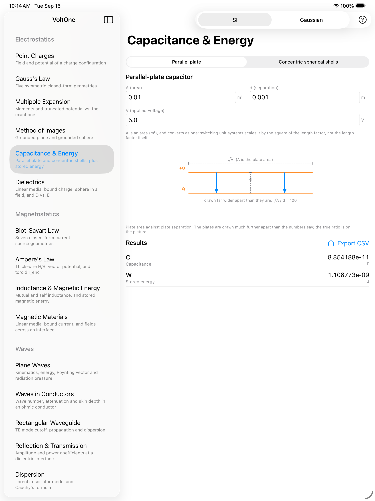
Each of these is a control on the screen. The app never picks one for you: a branch chosen silently is the easiest way for a correct calculation to hand you a wrong answer.
| Choice | Use it when |
|---|---|
| Energy counted on the charges, or counted on the field | Whenever an energy is reported for anything containing point charges. The sum over charges leaves out the work of manufacturing each point charge in the first place, and can come out negative. The field integral includes that work, is never negative, and diverges outright for a single point charge. Both are correct; they answer different questions, and swapping one for the other without saying so is how a user ends up with an infinity they cannot explain. |
| A pair of conductors, or one conductor alone | When the geometry is entered. For a single conductor the missing second one is an imagined shell infinitely far away, and the voltage is then measured from infinity rather than from a second electrode. The definition is unchanged but what the voltage means is not, and the app must say which it is using. |
| Point charges, or a continuous distribution | At the input. The two energy expressions look almost identical and differ exactly in whether the self-contribution is excluded. Applying the continuous form to point charges gives infinity; applying the discrete form to a continuum is simply wrong. |
| Which stored-energy form | When reporting the energy of a charged capacitor. The three forms are equal given the definition of capacitance, so this is a question of which quantity the user is holding fixed rather than of which answer is right, and showing all three keeps the user from converting by hand and slipping. |
| Symbol | What it is |
|---|---|
C | Capacitance: how many coulombs a pair of conductors takes on for each volt placed across them. Fixed entirely by their sizes, shapes and separation; nothing about the charge or the voltage enters it. |
Q | The charge on the positively charged conductor. The other one carries exactly the opposite. |
V | The potential of the positive conductor minus that of the negative one. Defined this way round so that capacitance always comes out positive. |
A | The area of one plate of a parallel-plate pair. |
d | The gap between the plates. |
a | The radius of the inner sphere of a concentric pair. |
b | The radius of the outer shell of a concentric pair, larger than the inner one. |
W | The work needed to assemble an arrangement from infinitely dispersed pieces, which is also what you get back by taking it apart. |
Rᵢⱼ | The distance between charges i and j once both are in their final positions. |
ρ | Charge per unit volume. |
E | The electric field; where it appears squared it is the magnitude that is squared, a number rather than a vector. |
ε₀ | The permittivity of empty space. |
Electrostatics · Linear media, bound charge, sphere in a field, and D vs. E
What happens to electric fields inside insulating material: how polarization shows up as real accumulated charge, what the displacement field can and cannot tell you, and the small set of geometries whose self-consistent answer is known in closed form.
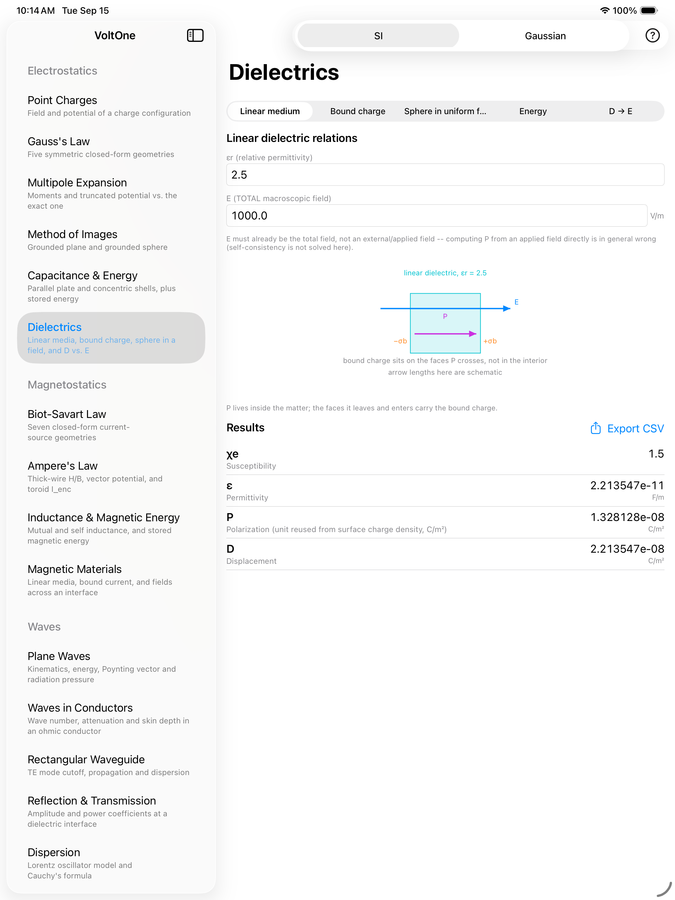
Each of these is a control on the screen. The app never picks one for you: a branch chosen silently is the easiest way for a correct calculation to hand you a wrong answer.
| Choice | Use it when |
|---|---|
| Whether the geometry is symmetric enough to give the displacement | Before anything else. With spherical, cylindrical or planar symmetry, the free charge determines the displacement and the calculation proceeds. Without it, the free charge does not determine the displacement, and assuming otherwise produces a definite wrong answer with nothing to flag it. The standard counterexample is a bar of permanently polarized material, which carries no free charge anywhere yet has a displacement that is not zero. |
| Getting the field from the displacement | At every point where an answer is wanted. In a linear material with a known permittivity, divide by that permittivity. In empty space, divide by the vacuum permittivity. Where the polarization is not known, the field simply cannot be determined, and that is a legitimate result which the app must display as such. Falling back to the vacuum permittivity in that third case would be silently wrong. |
| Which energy is being asked for | Whenever an energy is reported. One form answers the work of assembling every charge, free and bound, and excludes what it cost to stretch the molecules. The other answers the work of bringing in the free charge and letting the material respond, and includes it. Neither is wrong, and the second is usually what people mean, since free charge is what one actually moves about. The second also requires linearity, and applied to a permanently polarized material it gives an absurd result. |
| Charge held fixed, or voltage held fixed | For the force on a slab in a capacitor. The physical force is the same either way, being fixed entirely by where the charge sits. But the constant-voltage route must also account for the work the battery does, and the shortcut that forgets it delivers the right magnitude with the wrong sign, that is, a slab that appears to be pushed out rather than pulled in. |
| Which surface a bound surface charge belongs to | Whenever a bound surface charge is reported. The normal points out of the material, so the inner surface of a shell and its outer surface carry opposite signs from the same formula. A bound surface charge quoted without naming the surface and the direction of its normal is ambiguous by a sign. |
| Which system of units a susceptibility or permittivity is quoted in | Whenever either is displayed or entered. The two systems' susceptibilities differ by a factor of four pi, and the permittivity is dimensionless in one and dimensioned in the other. Only the dielectric constant is safe to quote bare. |
| Symbol | What it is |
|---|---|
P | Polarization: the dipole moment per unit volume, obtained by adding up an enormous number of tiny molecular dipoles and dividing by the volume they occupy. |
σ_b | Bound surface charge: charge left stranded at a surface because polarization pushed it there and it had nowhere further to go. Perfectly real charge, not a fiction. |
ρ_b | Bound volume charge: the pile-up that occurs inside the material wherever the polarization is not uniform. |
ρ_f | Free charge: everything that is not a result of polarization. Electrons on a conductor, ions stirred into a material, anything you put there yourself. |
D | Displacement: the combination of the field and the polarization built so that only free charge appears on the right-hand side of its flux law. A convenience, and a dangerous one. |
χ | Susceptibility: how readily a material polarizes in a given field. Dimensionless, but the same material has two different numerical values for it in the two common systems of units. |
ε | Permittivity of the material: the constant relating displacement directly to field. Carries units in one system and is dimensionless in the other. |
ε_r | Relative permittivity, also called the dielectric constant: the permittivity of the material divided by that of empty space. Dimensionless and the same number in both systems of units. |
E_vac | The field the very same free charges would produce with no material present at all. |
n̂ | The unit normal pointing out of the material. On an inner surface of a shell this points towards the centre, which is what puts the opposite sign on the bound charge there. |
ε₀ | The permittivity of empty space. |
Magnetostatics · Seven closed-form current-source geometries
A steady current makes a magnetic field, and for a handful of shapes that field can be written down in closed form. This module covers the general integral law and the specific geometries it can actually be carried out for: straight segments, circular loops on their axis, sheets, solenoids and toroids.
Each of these is a control on the screen. The app never picks one for you: a branch chosen silently is the easiest way for a correct calculation to hand you a wrong answer.
| Choice | Use it when |
|---|---|
| Straight wire: finite segment or infinite | Choose the segment when you have two end angles to give; the infinite case is the same relation with the angles opened out fully, not an unrelated formula. |
| Circular loop: on the axis | The loop result is offered for axial points only. There is no off-axis option, because there is no closed form to offer — see the limits. |
| Solenoid: inside or outside | You must say which side of the winding your point is on. The two sides give completely different answers and the field jumps across the boundary. |
| Toroid: inside or outside the winding | Stated as a choice rather than computed from the geometry, because the cross-section may be any shape and there is no inner or outer radius to test against. |
| Sheet of current: which side | The two sides have equal strength and opposite direction. The plane of the sheet itself is not covered by either case. |
| Symbol | What it is |
|---|---|
I | The steady current in the wire: the same number everywhere along it, because nowhere is charge allowed to pile up. |
μ₀ | The constant that fixes how much magnetic field a given current produces in empty space. |
s | Distance measured straight out from the wire or from the axis, at right angles to it. Never a distance from a point. |
dl′ | A short piece of the wire, pointing the way the current flows through it. |
𝓇 | The distance from the piece of wire doing the producing to the point where you want the field. |
θ₁ | For a straight segment: the angle from the perpendicular dropped onto the wire, out to the upstream end of the segment. Measured from the perpendicular, not from the wire. |
θ₂ | The same angle taken out to the downstream end of the segment. Positive on the downstream side of the foot of the perpendicular, negative on the upstream side. |
R | For a circular loop, the radius of the loop; for a solenoid, the radius of the cylinder. |
z | For a circular loop, how far along the axis you are from the centre of the loop. |
d | The separation between two parallel wires. |
K | Surface current density: current per unit width flowing across a surface. |
J | Volume current density: current per unit cross-sectional area flowing through a body. |
n | Turns per unit length of a solenoid winding. Not a total. |
N | The total number of turns on a toroid, counted right round the ring. Not a count per unit length. |
f | Force per unit length between two parallel wires. Only the force per unit length is finite; the total force on an infinite wire is not. |
Magnetostatics · Thick-wire H/B, vector potential, and toroid I_enc
When a current arrangement is symmetric enough, the field can be had in one line instead of by integration: the circulation of the field round a closed loop is set by the current threading it. This module covers that law, the four shapes it actually solves, and the vector potential that plays the same role for the magnetic field that voltage plays for the electric one.
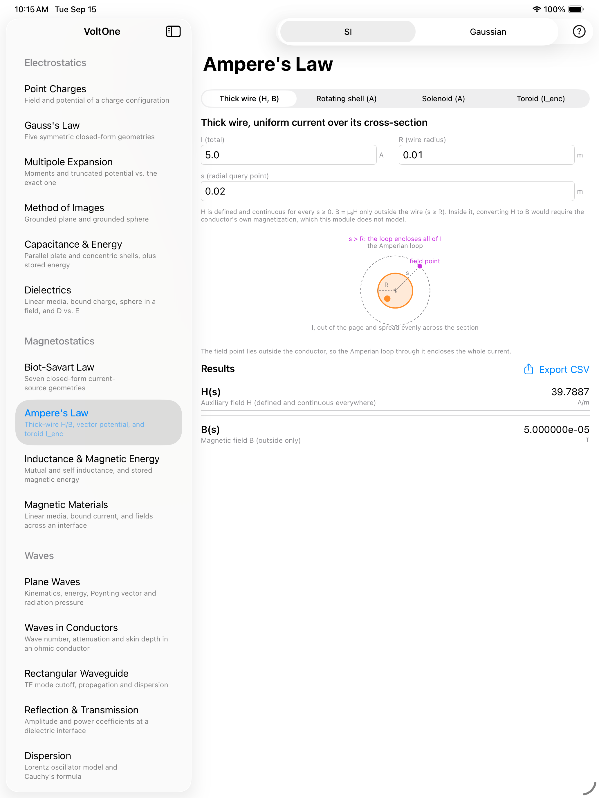
Each of these is a control on the screen. The app never picks one for you: a branch chosen silently is the easiest way for a correct calculation to hand you a wrong answer.
| Choice | Use it when |
|---|---|
| Solenoid: inside or outside | The magnetic field jumps across the winding; the two regions have nothing in common. |
| Toroid: inside or outside the winding | This must be an explicit choice on screen. The reference material distinguishes the two regions in words only and gives no inequality, and the cross-section may be any shape whatever, so there is no inner or outer radius to compute the answer from. |
| Sheet of current: which side | Equal strength, opposite direction; the plane itself has no defined value. |
| Thick wire: inside or outside the conductor | The two pieces meet continuously at the surface, so the boundary itself is safe to evaluate on either branch. |
| Which field you want: B or its auxiliary H | They differ inside magnetised matter. For the thick wire the printed result is for the auxiliary field only. |
| Gauge of the vector potential | A silent choice that changes the answer: different gauges give different vector potentials for one and the same magnetic field. This app takes the divergence-free gauge and says so on screen wherever a vector potential is shown. |
| Field or potential for a solenoid | Their regions behave oppositely: the field is zero outside and jumps at the wall, the potential is nonzero outside and is continuous. The two must never share a piece of explanatory text. |
| Symbol | What it is |
|---|---|
B | The magnetic field itself: the thing a moving charge feels a sideways force from. |
H | An auxiliary field defined so that only the current you control — the free current — appears as its source. Inside magnetised matter it is not the same thing as the magnetic field divided by a constant. |
A | The vector potential: a vector field whose curl is the magnetic field. It is not unique; see the gauge choice below. |
I_enc | The total current passing through the surface bounded by the loop you are integrating round. |
I_f | Only the free current — the current driven by a source, not the microscopic circulation inside magnetised material. |
J | Volume current density: current per unit cross-sectional area. |
M | Magnetisation: the density of magnetic moment inside a material. |
Φ | Magnetic flux: the amount of magnetic field crossing a given surface. |
s | Distance out from the axis, measured at right angles to it. |
R | Radius of the solenoid, the wire, or the spherical shell, depending on which shape is in front of you. |
n | Turns per unit length of a solenoid winding. |
N | Total number of turns on a toroid. |
σ | Surface charge density on the rotating shell: charge per unit area. |
ω | Angular velocity of the rotating shell, as a vector along the spin axis. |
Magnetostatics · Mutual and self inductance, and stored magnetic energy
A changing current induces a voltage in a neighbouring circuit and in itself. The two constants of proportionality — mutual and self inductance — are purely geometric, and the work done in establishing a current ends up stored in the magnetic field. This module covers both, plus the three shapes for which the inductance can be written down in closed form.
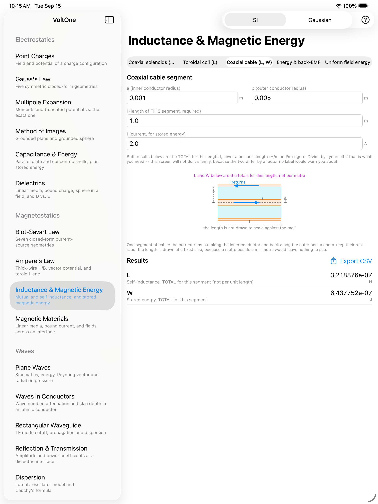
Each of these is a control on the screen. The app never picks one for you: a branch chosen silently is the easiest way for a correct calculation to hand you a wrong answer.
| Choice | Use it when |
|---|---|
| Total or per unit length | For the cable and for long solenoids this is a real fork. The result given above is the total for a chosen length; the per-unit-length figure differs by that length and carries different units. The screen must say which one it is showing. |
| Mutual inductance: which subscript order | If the subscripted form is displayed at all, the definition must be displayed with it. Showing a bare symbol leaves the user unable to tell which loop carries and which receives. |
| Getting the mutual inductance: integral or reciprocity | The double loop integral is the definition and is best shown, not evaluated. In practice you compute the easy direction and use reciprocity for the other. |
| Getting the self-inductance: from flux or from energy | The flux route is direct when the current follows a single well-defined path. When the current spreads over a surface or through a volume, different parts of it link different amounts of flux, and the energy route is the workable one. |
| Energy: integrate over current or over field | Two equivalent bookkeepings of the same total. They differ only in where the energy is said to sit, and the total is the same either way. |
| Symbol | What it is |
|---|---|
M | Mutual inductance: how much flux one loop throws through the other per ampere it carries. A purely geometrical quantity — sizes, shapes and relative position, nothing else. |
L | Self-inductance: how much flux a loop throws through itself per ampere it carries. Always a positive quantity. |
Φ | Magnetic flux through a loop: the amount of magnetic field crossing any surface bounded by it. |
ℰ | Induced electromotive force — the voltage driven round a loop by a changing flux. The minus sign in front of it is what makes the induced effect oppose the change that caused it. |
W | The work needed to raise the current from zero to its final value, which is also the energy stored once it is there. |
𝓇 | In the double-loop integral, the distance between the two short pieces of wire being paired up, one taken from each loop. |
a, b (ring coil) | Inner and outer radius of a ring-shaped coil of rectangular cross-section. |
h | Height of that rectangular cross-section. |
N | Total number of turns on the ring coil, counted right round. Not a count per unit length. |
a, b (cable) | Radius of the inner conductor and of the outer sheath of a coaxial cable. Different quantities from the two radii of the ring coil, despite the same letters. |
l | The length of the piece of cable or solenoid you have chosen to consider. A variable you supply, not a property of the cable. |
n₁, n₂ | Turns per unit length of the inner and of the outer solenoid in the nested pair. |
τ | Time constant of a resistive-inductive circuit: how long the current takes to reach a substantial fraction — roughly two-thirds — of its final value. |
R | Resistance in the circuit whose switch-on transient is given below. |
Waves · Kinematics, energy, Poynting vector and radiation pressure
In empty space the electric and magnetic fields satisfy a wave equation, and the simplest solution is a single-frequency plane wave. This module gives that wave, the fixed relation between its two fields, the energy and momentum it carries — instant by instant and averaged over a cycle — and what polarization means for it.
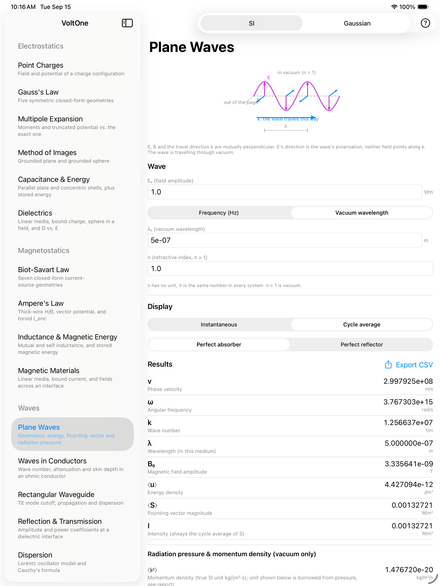
Each of these is a control on the screen. The app never picks one for you: a branch chosen silently is the easiest way for a correct calculation to hand you a wrong answer.
| Choice | Use it when |
|---|---|
| Instantaneous or cycle-averaged | This must be a visible choice, not a default. The instantaneous and averaged quantities differ by a factor of two, and there is no way to tell them apart by looking at the magnitude of the answer. |
| Absorbing or reflecting surface | For radiation pressure. A perfect reflector feels twice what a perfect absorber feels. Real surfaces lie between, and no interpolation rule is offered here. |
| Vacuum or linear medium | In a medium the speed, the intensity and the ratio of the two field amplitudes all change. Momentum density and radiation pressure have no medium version in this module. |
| Symbol | What it is |
|---|---|
E₀ | The peak strength of the electric field in the wave. |
B₀ | The peak strength of the magnetic field. In vacuum it is smaller than the electric peak by a factor of the speed of light. |
k | Wave number: how many radians of phase the wave advances per unit distance. As a vector it points the way the wave travels. |
ω | Angular frequency: how many radians of phase the wave advances per unit time. |
δ | A constant phase offset, fixing where the crest sits at the origin at time zero. |
n̂ | Polarization direction: the direction the electric field oscillates along. Always at right angles to the direction of travel. |
θ | Polarization angle: the angle the polarization direction makes within the plane across the direction of travel. |
u | Energy per unit volume held in the fields at a given instant. |
S | Energy crossing unit area per unit time, and the direction it flows in. |
℘ | Momentum per unit volume carried by the fields. |
I | Intensity: the energy flow per unit area averaged over a full cycle. Averaged by definition — there is no instantaneous version of it. |
P | Radiation pressure: the average force per unit area the wave exerts on a surface it hits. |
n | Refractive index: the factor by which a medium slows the wave down compared with vacuum. |
ε, μ | The permittivity and permeability of the medium the wave is travelling in; with a nought subscript, their values in vacuum. |
v | The speed of the wave in the medium. |
⟨ ⟩ | An average taken over one complete cycle, or over many. Anything wearing these brackets is not an instantaneous value. |
Waves · Wave number, attenuation and skin depth in an ohmic conductor
Inside a conductor the wave equation picks up a damping term, the wave number becomes complex, and the wave dies away as it goes. This module gives the wave number's two parts, the depth the wave reaches, the lag the magnetic field falls into behind the electric one, and what happens when such a wave arrives at a conducting surface.
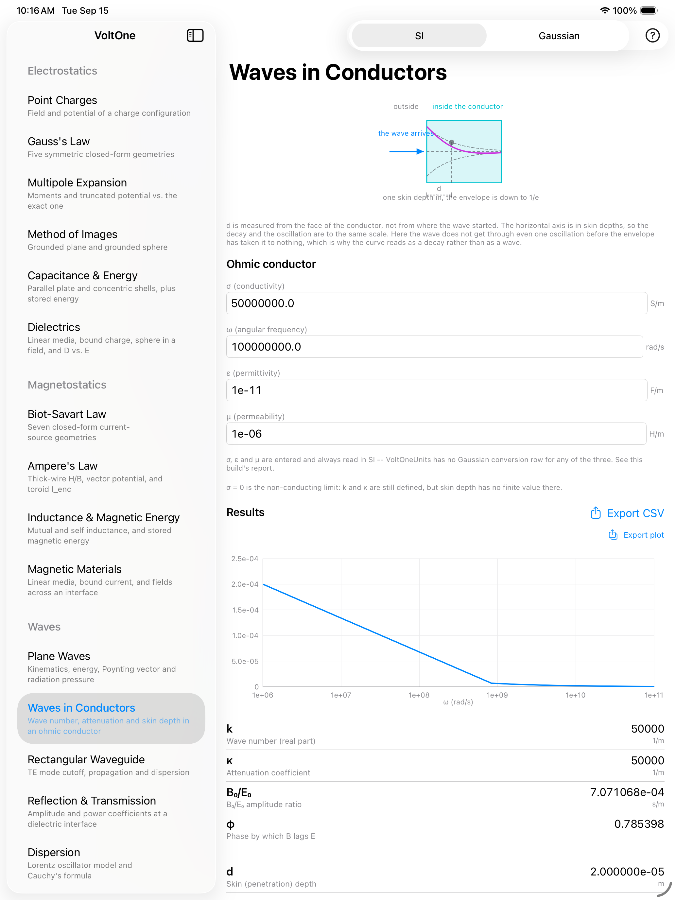
Each of these is a control on the screen. The app never picks one for you: a branch chosen silently is the easiest way for a correct calculation to hand you a wrong answer.
| Choice | Use it when |
|---|---|
| General, good conductor, poor conductor, or perfect conductor | The general expressions cover everything and this app computes from them. The two approximations are offered as statements about limiting behaviour, with the dividing quantity being the conductivity against the permittivity times the frequency. |
| Skin depth: amplitude or intensity | The definition used here is the depth at which the amplitude falls by a factor of e. Intensity falls twice as fast, so an intensity-based depth is half this one. Both names are in use in the literature. |
| At the surface: reflected or transmitted wave | Both are complex, so both carry a phase shift as well as a change of size. |
| Symbol | What it is |
|---|---|
σ | Conductivity: how freely charge flows in response to an electric field. Large for metals, small for poor conductors, infinite for the idealised perfect conductor. |
ε, μ | Permittivity and permeability of the conducting material itself. |
ω | Angular frequency of the wave being sent in. |
k | Real part of the complex wave number. This is what sets the wavelength, the speed and the refractive index inside the conductor. |
κ | Imaginary part of the complex wave number, and therefore the rate at which the amplitude dies away with distance. It has units of one over length. Not the same thing as the dimensionless extinction coefficient of the optics literature. |
d | Skin depth: the distance over which the amplitude falls by a factor of e, roughly to a third. A measure of how far the wave gets into the material. |
K | Magnitude of the complex wave number. |
φ | The phase angle of the complex wave number, and therefore the amount by which the magnetic field lags the electric one. |
τ | The permittivity divided by the conductivity. A characteristic time that tells you how good a conductor you are dealing with, relative to the period of the wave. |
ρ_f | Free charge density — the charge that can move, as distinct from charge bound into atoms. |
β̃ | The medium ratio that governs reflection at the surface, here a complex number rather than a real one. |
Waves · TE mode cutoff, propagation and dispersion
A wave can be sent down a hollow metal pipe, but only in certain patterns and only above a frequency that depends on the pipe's cross-section. This module gives those patterns for a rectangular pipe, the frequency below which each one will not travel at all, and the two different speeds that a guided wave has.
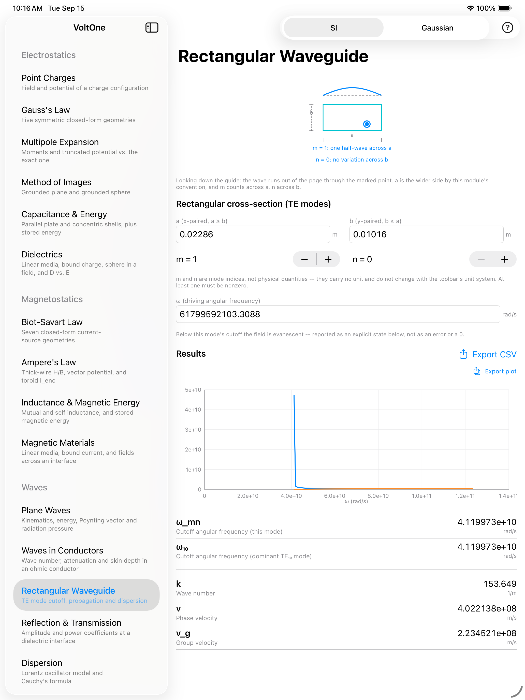
Each of these is a control on the screen. The app never picks one for you: a branch chosen silently is the easiest way for a correct calculation to hand you a wrong answer.
| Choice | Use it when |
|---|---|
| Propagating or cut off | Above the mode's cut-off frequency you get a travelling wave; below it you get a field that dies away exponentially and carries nothing. This is the first thing to establish for any mode you ask about. |
| Which mode | Two whole-number indices, one for each transverse direction. Each may be zero, but not both at once. The lowest cut-off belongs to the mode with a one on the larger side and a zero on the smaller. |
| Kind of wave: transverse electric, transverse magnetic, or both | Named by which axial field component vanishes. This app offers the transverse-electric family only; see the limits. |
| Phase velocity or group velocity | Both are speeds, they are different numbers, and one exceeds the speed of light while the other does not. Asking for the speed of a guided wave without saying which one is meaningless. |
| Symbol | What it is |
|---|---|
a | The larger of the two cross-sectional dimensions of the pipe, measured along the first of the two transverse axes. |
b | The smaller cross-sectional dimension, along the second transverse axis. This app assumes the first dimension is the larger one. |
m | The mode index belonging to the larger dimension. A whole number counting half-wavelengths across that side. |
n | The mode index belonging to the smaller dimension. Same meaning, other side. |
k | Wave number along the pipe: how fast the phase advances per unit distance down the axis. |
ω | Angular frequency of the wave being sent down the pipe. |
ω_mn | Cut-off frequency of one particular mode, as an angular frequency. Below it that mode does not travel. |
c | The speed of light in the empty interior of the pipe. |
v | Phase velocity: the speed at which a point of constant phase moves down the pipe. Greater than the speed of light, and carrying nothing with it. |
v_g | Group velocity: the speed at which energy and signal actually travel down the pipe. Always less than the speed of light. |
E_z, B_z | The components of the two fields along the pipe's axis. Which of them is zero is what names the kind of wave. |
θ | In the bouncing-plane-wave picture, the angle between the underlying plane wave's direction and the axis of the pipe. |
Waves · Amplitude and power coefficients at a dielectric interface
When a wave meets the boundary between two transparent media, part of it comes back and part goes on. This module gives the directions those two waves take, the fraction of the amplitude and of the energy in each, the angle at which one polarization is not reflected at all, and what happens past the angle at which nothing is transmitted.
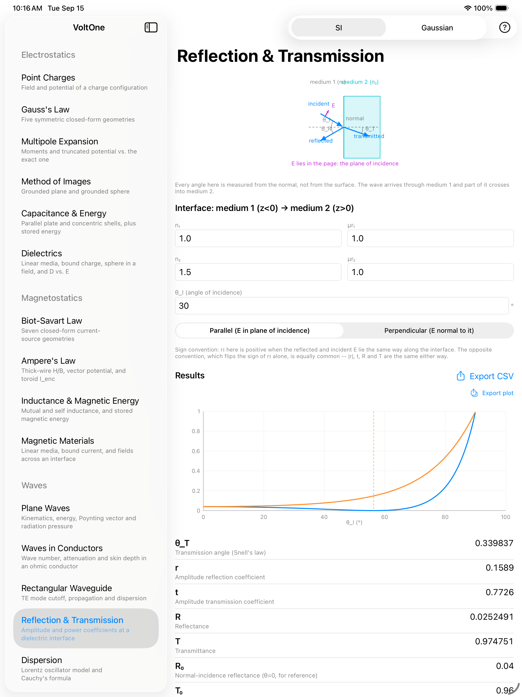
Each of these is a control on the screen. The app never picks one for you: a branch chosen silently is the easiest way for a correct calculation to hand you a wrong answer.
| Choice | Use it when |
|---|---|
| Polarization: parallel or perpendicular to the plane of incidence | Always an explicit choice on screen. The two give genuinely different answers away from head-on incidence, and one of them has an angle of no reflection while the other never does. Any other polarization is a combination of these two. |
| Sign convention for the reflected amplitude | Shown on screen as a labelled diagram of the three positive directions, not as a sentence. This is not a matter of taste that can be left implicit: it flips the sign of the parallel reflection coefficient. |
| Head-on or at an angle | Head-on is the limiting case, and the angled relations reduce to it exactly. |
| Which medium is denser | Going into the denser medium there is no critical angle and the transmitted wave always exists. Going the other way, everything past the critical angle is total reflection with a field that merely seeps into the second medium. |
| Below or above the critical angle | Above it the refraction angle is no longer an angle, the transmitted wave is no longer a travelling wave, and the reflectance is exactly one. |
| Phase of the reflected wave | Below the no-reflection angle and above it, the reflected wave comes back the right way up or inverted. Which way round depends on the two ratios, and on the convention above. |
| Symbol | What it is |
|---|---|
medium 1 | The medium the incident wave arrives through. Its properties carry subscript one. |
medium 2 | The medium on the far side of the boundary, which the transmitted wave goes into. |
θ_I | Angle of incidence, measured from the normal to the surface — not from the surface. |
θ_R | Angle of reflection, likewise from the normal. |
θ_T | Angle of refraction, likewise from the normal. Past the critical angle it stops being an angle at all. |
n₁, n₂ | Refractive index of each medium: the factor by which it slows the wave relative to vacuum. |
α | The ratio of the cosine of the refraction angle to the cosine of the incidence angle. It depends on the geometry and equals one at head-on incidence. This app defines it this way and never any other way. |
β | A ratio built from the two media alone — their permeabilities and their speeds — and independent of the angle. This app defines it this way and never any other way. |
r | Amplitude reflection coefficient: the reflected electric amplitude divided by the incident one. It carries a sign, and the sign depends on a convention. See the limits. |
t | Amplitude transmission coefficient: the transmitted electric amplitude divided by the incident one. |
R | Reflectance: the fraction of the arriving energy that comes back. Independent of any sign convention. |
T | Transmittance: the fraction of the arriving energy that goes on. Also convention-free. |
θ_B | The angle at which a wave polarized in the plane of incidence is not reflected at all. |
θ_c | The critical angle: beyond it, going from a denser to a thinner medium, nothing is transmitted. |
κ | The rate at which the field dies away with depth beyond the surface once the incidence angle is past critical. |
plane of incidence | The plane containing the incoming direction of travel and the normal to the surface. All three directions of travel lie in it. |
Waves · Lorentz oscillator model and Cauchy's formula
A transparent material bends blue light more than red, and the reason is that the electrons inside it are bound to their molecules like masses on springs. Drive those springs at a frequency and they respond with an amplitude and a lag that both depend on how close you are to their own natural frequency. This module builds that picture into a refractive index and an absorption that vary with frequency, shows what happens as you sweep through a resonance, and ends with the simple two-constant formula that covers the ordinary case far from any resonance.
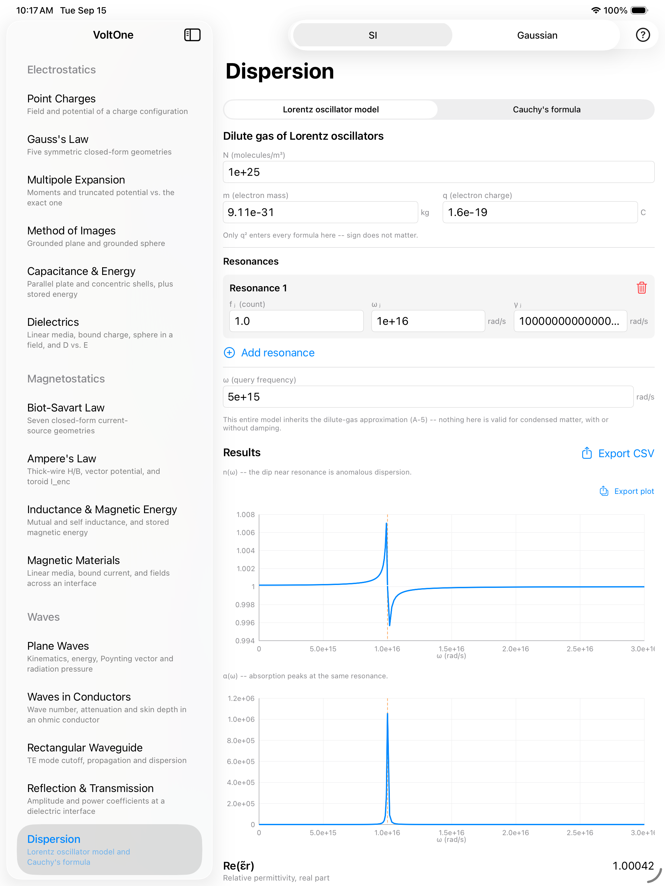
Each of these is a control on the screen. The app never picks one for you: a branch chosen silently is the easiest way for a correct calculation to hand you a wrong answer.
| Choice | Use it when |
|---|---|
| Below a resonance | The driven electrons keep nearly in step with the field, the absorption is small, and the index climbs slowly as the frequency rises. This is the ordinary case, and it is where every transparent material is used. |
| At a resonance | The electrons are being driven at the frequency they most readily move at. The amplitude of their motion is large, the damping dissipates a correspondingly large amount of energy, and the absorption peaks. The material may be effectively opaque through this range. The index does not peak here; it passes through this point on its way down. |
| Above a resonance | The response has reversed: the electrons move against the field rather than with it, and the contribution of that resonance to the index turns negative. The index can fall below one, which means a crest travels faster than light — see the limits for why that is not a contradiction. |
| Ordinary or anomalous dispersion | Whether the index is rising or falling with frequency. The falling stretch straddles a resonance and coincides with the region of strongest absorption. This app plots the index and the absorption together so the two can be read against each other, and marks where each resonance sits; it does not mark the edges of the falling region, because no expression for them is available. |
| With damping or without | Setting every damping rate to zero gives no absorption at all and an index that diverges at each resonance. That divergence is an artefact of dropping the damping, not a prediction. This app computes with whatever damping rates are supplied and reports the point where a resonance is hit with no damping as a named refusal rather than returning an infinity. |
| One resonance or several | A single resonance is the sum with one term in it. Nothing in the reference material prints a single-resonance form of the index or the absorption, so this is our own specialisation rather than a separate published result, and the plots of a single resonance leave out a background contribution from the others that in a real material often keeps the index above one on both sides. |
| Thin gas, or anything denser | The explicit formulas for the index and the absorption are gas formulas twice over. This app computes the wave number by exact complex arithmetic rather than by the expansion, which removes the second of those two dependencies but not the first. Nothing here is valid for a solid or a liquid. |
| Symbol | What it is |
|---|---|
x | Displacement of a bound electron from where it would sit at rest. |
m | Mass of the electron. The nuclei are far heavier and are treated as not moving at all. |
q | Charge of the electron. It appears squared in every relation that matters here, so its sign never affects an answer. |
k_spring | Stiffness of the effective spring holding the electron in place — the curvature of its potential well at the bottom. |
ω₀ | Natural frequency of that one bound electron: the frequency it would ring at if you displaced it and let go, with no damping and nothing driving it. |
γ | Damping rate. It measures how fast the oscillation loses energy, and it is written as a rate per unit time rather than as a force constant — the force it produces is this rate times the mass times the velocity. |
ω | Angular frequency of the wave being sent in — the frequency the electrons are driven at, not one of their own. |
E₀ | Amplitude of the driving electric field at the place where the electron sits. |
p | Dipole moment of one driven electron: its charge times its displacement. |
P | Polarization: the density of dipole moment in the material. Written with a tilde it is the complex quantity the real one is the real part of. |
N | Number of molecules in each unit of volume. |
f_j | How many electrons in each molecule share the natural frequency and damping rate labelled j. A count, not a weight, and no normalising condition on the counts is available — see the limits. |
ω_j | Natural frequency of the j-th group of electrons — one resonance of the material. |
γ_j | Damping rate of that same group. |
χ̃_e | Complex electric susceptibility: the constant relating the complex polarization to the complex field. It has to be complex here precisely because the polarization does not keep step with the field. |
ε̃ | Complex permittivity of the material at this one frequency. |
ε̃_r | The same quantity expressed as a multiple of the vacuum value, so that empty space gives one. |
ε₀ | Permittivity of empty space. |
μ₀ | Permeability of empty space. This module uses the vacuum value throughout — see the assumptions. |
k̃ | Complex wave number. Its two parts do different jobs and are not interchangeable. |
k | Real part of the wave number: what sets the wavelength inside the material, the speed of the wave, and the refractive index. |
κ | Imaginary part of the wave number, and therefore the rate at which the amplitude dies away with distance. It has units of one over length. It is not the dimensionless extinction coefficient that carries the same letter elsewhere — see the limits. |
α | Absorption coefficient: twice the decay rate of the amplitude, because what a detector measures is intensity and intensity falls twice as fast. Units of one over length. |
n | Refractive index — a real number here. This module never defines a complex one. |
v | Speed at which a crest of the wave moves. It can come out greater than the speed of light without anything being wrong; see the limits. |
v_g | Group velocity: the speed at which a pulse, and therefore the energy, actually travels. |
c | Speed of light in vacuum. |
λ | Wavelength in vacuum, not the wavelength inside the material. Every relation below that mentions a wavelength means this one. |
A | Coefficient of refraction: the constant that sets how much a material bends light overall. Dimensionless. |
B | Coefficient of dispersion: the constant that sets how much more it bends short wavelengths than long ones. It has units of area. |
z | Distance travelled into the material, measured along the direction the wave is going. |
I | Intensity: the power the wave carries across unit area. |
Radiation · Electric/magnetic dipole power and angular distribution
An oscillating electric or magnetic dipole radiates energy away to infinity. This module gives the angular distribution of that radiation and the total power it carries.
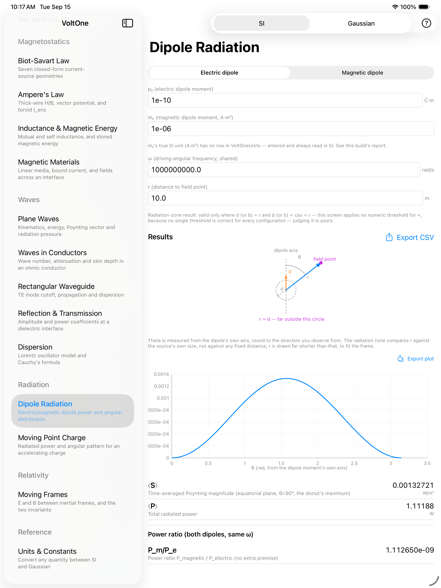
Each of these is a control on the screen. The app never picks one for you: a branch chosen silently is the easiest way for a correct calculation to hand you a wrong answer.
| Choice | Use it when |
|---|---|
| Electric dipole | The source is an oscillating separation of charge. θ is measured from the electric dipole moment. |
| Magnetic dipole | The source is an oscillating current loop. θ is measured from the magnetic moment, which is a different axis from the electric case and must not be shared with it. |
| Symbol | What it is |
|---|---|
p₀ | Peak electric dipole moment of the oscillating source: charge times separation, at the instant the separation is largest. |
m₀ | Peak magnetic dipole moment: current times loop area, at the instant the current is largest. |
ω | Angular frequency of the oscillation, in radians per second. |
r | Distance from the dipole to the point where the radiation is observed. |
θ | Angle between the dipole's own axis and the direction you are observing from. Zero means looking along the dipole; ninety degrees means looking side-on. |
⟨S⟩ | Energy crossing unit area per unit time, averaged over a full cycle of the oscillation. |
⟨P⟩ | Total energy radiated per unit time, averaged over a full cycle, summed over every direction. |
Radiation · Radiated power and angular pattern for an accelerating charge
A single charge radiates only when it accelerates. This module gives how much power it radiates, how that power is spread over direction, and the recoil force the radiation exerts back on the charge. How fast the charge is already moving, and whether it is speeding up along its own line of travel or being pushed sideways, change the answer by orders of magnitude — so the case is something you choose, never something assumed for you.
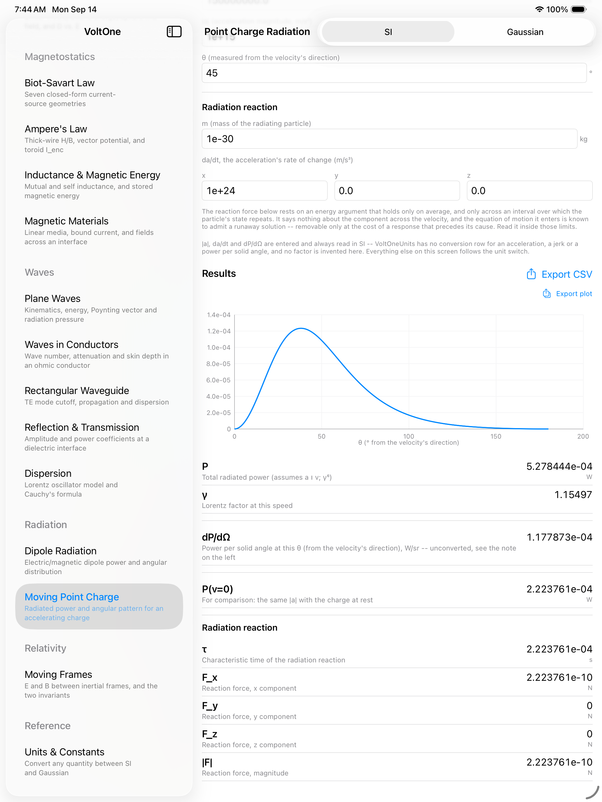
Each of these is a control on the screen. The app never picks one for you: a branch chosen silently is the easiest way for a correct calculation to hand you a wrong answer.
| Choice | Use it when |
|---|---|
| Speed small compared with light speed | The charge is barely moving on the scale set by light speed. Total power depends on the acceleration alone; the pattern is a doughnut about the acceleration and θ is measured from the acceleration's direction. |
| Acceleration along the velocity | The charge is speeding up or slowing down along its own line of travel. Total power carries the sixth power of γ. θ is measured from the velocity's direction. |
| Acceleration across the velocity | The charge is being steered sideways — circular motion is the important case. Total power carries the fourth power of γ, a factor of γ squared below the along-the-velocity case at the same speed and acceleration. Two angles are needed for the pattern. |
| Neither, in general | Velocity and acceleration make some other angle. Enter both as directions; the total power follows from the general relation, and no angular pattern is offered for this case. |
| Which direction the angle is measured from | Not a free choice — it is fixed by the case above, and the cases disagree. Carrying an angle measured from the acceleration into a relation that measures it from the velocity turns the radiation pattern by a right angle while still producing plausible-looking numbers. The app never shares one angle between cases. |
| A flux, or a power per solid angle | The low-speed relation gives energy crossing unit area per second and needs a distance; the relativistic ones give power per unit of direction and need none. They are different physical quantities with different units and must not be compared or plotted against each other. |
| Symbol | What it is |
|---|---|
q | The charge that is radiating. Only its square ever appears, so a negative charge radiates exactly as a positive one of the same size does. |
a | How fast the charge's velocity is changing, as a plain size with no direction attached. Used wherever a relation needs only the magnitude. |
𝐚 | The same acceleration kept as a direction and a size together. Needed when the angle between acceleration and velocity is not fixed in advance. |
v | How fast the charge is going, as a plain size. Must stay strictly below the speed of light; nothing here has a meaning at or beyond it. |
𝐯 | The charge's velocity kept as a direction and a size together. |
β | The speed written as a fraction of the speed of light. Zero for a charge at rest, approaching one for a charge near light speed. |
γ | The factor that grows without bound as the speed approaches light speed. It is what turns a modest acceleration into an enormous radiated power at high speed. |
c | The speed of light in vacuum. |
μ₀ | The magnetic constant of empty space, which sets the overall size of every power below. |
θ | The angle between the direction you are observing from and a reference direction — but the reference direction is NOT the same in every relation here. In the low-speed relation it is the acceleration's direction; in each relativistic relation it is the velocity's direction. Every relation below says which, and they must never be shared. |
φ | Used only in the sideways-acceleration case: the angle swept around the velocity, starting from the acceleration's direction. It is what makes that pattern lopsided rather than circular about the line of travel. |
r | Distance from the charge, at the instant the radiation left it, out to where you are measuring. It appears only in the low-speed relation, which gives a flux crossing an area rather than a power per unit of direction. |
𝐫̂ | A unit arrow pointing from the charge out towards the observation point: the direction the radiation is travelling. |
P | Total power radiated — energy leaving the charge per second, added up over every direction. |
𝐒_rad | The radiated energy crossing unit area per second at a given place, carried outward along 𝐫̂. A flux density, so it falls off with distance. |
dP/dΩ | Power radiated per unit of solid angle: how much of the total goes into a narrow cone in a given direction. Unlike a flux, it does not depend on how far away you stand. |
Ω | Solid angle — the two-dimensional measure of 'how much direction' a cone covers, the way an ordinary angle measures how much of a circle an arc covers. |
𝐅_rad | The recoil force the radiation exerts back on the charge that emitted it. |
𝐚̇ | The rate at which the acceleration itself is changing. The recoil force depends on this, not on the acceleration — so a charge can feel the recoil at an instant when it is not radiating at all. |
m | The mass of the radiating particle. It enters only the characteristic time below. |
τ | The characteristic time built from the charge and its mass: the time scale on which the recoil force acts. For an electron it is around six parts in ten thousand million million million million of a second — far shorter than anything classical mechanics otherwise describes. |
Magnetostatics · Linear media, bound current, and fields across an interface
Matter responds to a magnetic field: the tiny current loops inside every atom line up, a little or a lot, and the material becomes a source of magnetic field in its own right. This module gives the quantity that measures that alignment, the two genuine currents it amounts to, the auxiliary field that lets you work from the current you control rather than the current you cannot see, what happens to each field as you cross a surface, and the one-parameter description that covers the materials whose response is proportional to the field they are in.
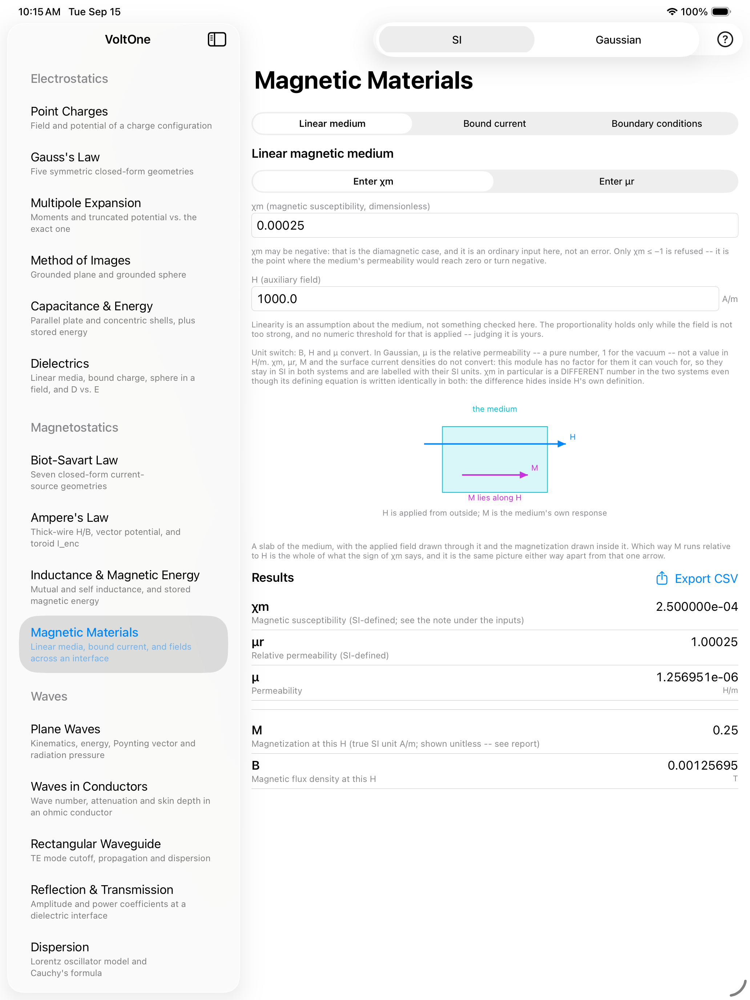
Each of these is a control on the screen. The app never picks one for you: a branch chosen silently is the easiest way for a correct calculation to hand you a wrong answer.
| Choice | Use it when |
|---|---|
| Pulled into a field, or pushed out of it | The sign of the susceptibility, and nothing else, decides which. Positive means the magnetization lines up with the field, the relative permeability sits above one, the bound surface current runs the same way as the driving current, and a sample placed in a field that varies from place to place is drawn towards the strong region. Negative means all four the other way round. This app treats a negative susceptibility as an ordinary input, not an error, and shows which case is in hand. |
| Materials that hold their own magnetization | Some materials keep a magnetization after the field that made it is removed, and what they do next depends on everything that has happened to them before. For these the linear description is not approximate, it is inapplicable: there is no single susceptibility and no single permeability, because the quantities that go by those names are slopes that themselves vary with the field. This app does not model that case and offers no value for it. Feeding a remembered susceptibility for such a material into the linear relations here produces a number with nothing behind it. |
| Describing the medium by its susceptibility or by its relative permeability | Two ways into the same one-parameter description, related by adding or subtracting one. This app accepts either and says which was supplied, because the two are easy to confuse at values close to one — a relative permeability just below one and a small negative susceptibility are the same material. |
| Which field you are being given | The magnetic field and the auxiliary field are different things inside magnetized matter, and only one of them is what a given relation returns. Where symmetry lets a field be had from the driving current alone, that field is the auxiliary one; getting the magnetic field from it requires knowing the material as well. |
| Which component crosses the interface | Normal or tangential is not a presentation choice, it is a choice between different relations with different right-hand sides. The magnetic field's normal component is continuous and its tangential component steps by the total surface current; the auxiliary field is the other way round, with a discontinuous normal component and a tangential step set by the free current alone. |
| Uniform magnetization or not | A magnetization that is the same everywhere has no volume bound current at all — the curl of a constant is zero — and everything is on the surface. This app computes the volume bound current only for that case, and does not silently report zero for a magnetization that varies. |
| Symbol | What it is |
|---|---|
M | Magnetization: the density of magnetic moment inside the material — how much magnetic moment sits in each unit of volume, and which way it points. Throughout this module it is an input, not something solved for. |
m | Magnetic dipole moment: the strength and axis of one small current loop, or of a whole body treated as one. |
B | The magnetic field itself — the total one, counting every current there is, whether you put it there or the material did. |
H | An auxiliary field, defined so that only the current you drive appears as its source. It is not the magnetic field divided by a constant, and inside magnetized matter the difference is the whole point. |
A | Vector potential: a vector field whose curl is the magnetic field. |
J_b | Bound volume current density: current per unit cross-sectional area arising from the atomic loops failing to cancel inside the material. No single charge travels far, but the field it makes is the field of an ordinary current. |
K_b | Bound surface current density: current per unit width running along the surface of the magnetized body. |
J_f | Free volume current density — the current that is there because something drove it there, as distinct from the atomic circulation. |
K_f | Free surface current density: free current per unit width flowing in the surface itself. |
K | Total surface current density — bound plus free. Written without a qualifier, it means the whole of it, and one boundary relation below needs exactly that rather than the free part alone. |
I_f,enc | The total free current threading the loop you are integrating round. |
χ_m | Magnetic susceptibility: the single dimensionless number describing how strongly a linear material magnetizes in a given auxiliary field. Positive for materials pulled into a field, negative for those pushed out. It is a different number under a different system of units even though the equation defining it is written identically — see the limits. |
μ | Permeability of the material: the constant relating the magnetic field to the auxiliary field once the material is known to be linear. |
μ₀ | The permeability of empty space: the value the permeability takes when there is nothing there to magnetize. |
μ_r | Relative permeability: the material's permeability expressed as a multiple of the empty-space value, so that one means no response at all. |
n̂ | Unit normal to a surface. For a magnetized body it is the outward-drawn normal; for an interface it points from the side labelled below towards the side labelled above. Only its direction carries meaning. |
above, below | The two sides of an interface. Which side is which is a labelling choice, but it must be the same choice in every relation on the page, because the normal direction is tied to it. |
⊥ | The component perpendicular to the interface — along the normal, not along the surface. |
∥ | The component lying in the interface. |
𝓇 | The distance from the point where the source sits to the point where you want the field. The hat on it means the unit vector along that separation. |
r′ | A point inside the source, swept over by the integration, as distinct from the field point r. |
τ | Volume, as the variable of integration; a′ is the corresponding area. |
R | Radius of the sphere. |
θ | Angle measured from the axis the magnetization points along. |
φ̂ | The direction you would travel going round that axis, at right angles to both the axis and the outward direction. |
ẑ | The direction along the solenoid's axis. |
n | Turns per unit length of a solenoid winding. Not to be confused with the unit normal, which always carries a hat. |
I | The current in the winding. |
Relativity · E and B between inertial frames, and the two invariants
Electric and magnetic fields are not separate things that each observer agrees on: one observer's magnetic field is partly another's electric field, and which is which depends on how the two observers are moving relative to each other. This module turns a pair of fields measured in one frame into the pair measured in a frame moving past it, gives the two combinations of the fields that every frame agrees on, and gives the rule for adding velocities that makes all of it consistent.
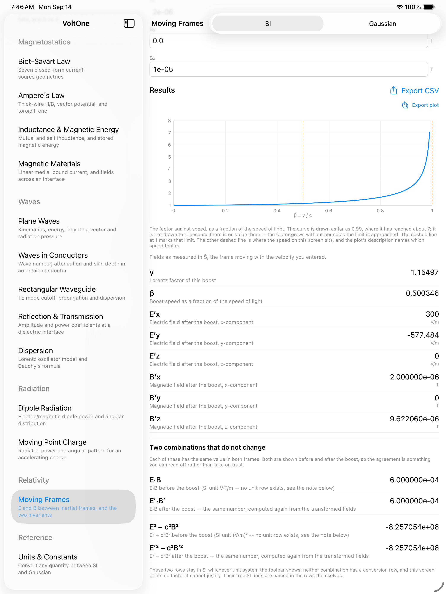
Each of these is a control on the screen. The app never picks one for you: a branch chosen silently is the easiest way for a correct calculation to hand you a wrong answer.
| Choice | Use it when |
|---|---|
| Which way the boost runs | Going from the first frame to the second, or from the second back to the first. The two differ only by the sign of the relative velocity, which means picking the wrong one silently returns a number that looks entirely reasonable. It has to be an explicit choice, never a default. |
| Motion along an axis, or in a general direction | If the relative velocity lies along one of the coordinate axes, the component relations apply as published. If it points in some general direction, what the app evaluates is the vector form — which, as its provenance says, is worked out here rather than taken from a source. Both give the same answer where they overlap; they do not have the same standing. |
| One of the two fields is zero in some frame | If there is no magnetic field at a point in one frame, or no electric field there, the two fields in every other frame are related by a single cross product instead of the full six-component rule. Worth recognising, because it is the situation a charge moving at constant velocity actually presents. |
| Whether a frame exists that removes one of the fields | Decided by the second invariant's sign, and by the first invariant being zero or not — not by trial. If the fields are not perpendicular, no frame removes either one. This is a question to settle before hunting for a boost that cannot exist. |
| Symbol | What it is |
|---|---|
S | The frame the fields are measured in to begin with — 'where you are standing'. |
S′ | The second frame, moving past the first at a steady velocity. Primed quantities are the ones measured in it. |
𝐯 | The velocity of the second frame as measured in the first. This one vector defines what 'along the motion' and 'across the motion' mean everywhere below — it has nothing to do with the direction of the fields themselves. |
v | The size of that relative velocity. Must be strictly below the speed of light: above it there is no such frame, and the app says so instead of producing a number. |
u | The velocity of a particle, as distinct from the velocity of a frame. The two are kept under separate names throughout, because confusing them is the easiest way to get a right-looking wrong answer. |
u′ | That same particle's velocity as measured in the second frame. |
β | The relative speed of the two frames written as a fraction of the speed of light. |
γ | The factor set by the relative speed of the two frames. It multiplies every field component across the motion and leaves every component along it alone. |
c | The speed of light in vacuum. |
𝐄, 𝐁 | The electric and magnetic fields at one place and one moment, as measured in the first frame. Note that the same letter E is conventionally also used for relativistic energy; here it only ever means the electric field. |
𝐄′, 𝐁′ | The same two fields at the same event, as measured in the second frame. |
𝐄∥, 𝐄⊥ | The parts of the electric field along and across the relative velocity of the two frames. 'Along' means along 𝐯, never along anything to do with the field itself. |
𝐁∥, 𝐁⊥ | The same split applied to the magnetic field. |
x, y, z, t | Position and time of an event in the first frame, with the x direction chosen along the relative motion. Primed versions are the same event's coordinates in the second frame. |
𝐄·𝐁 | The two fields multiplied together in the way that measures how nearly parallel they are. Every frame gets the same number for it. |
E² − c²B² | The other combination every frame agrees on: which of the two fields is, in a definite sense, the larger one. Its sign cannot be changed by any choice of frame. |
Reference · Convert any quantity between SI and Gaussian
Two systems of units are in circulation for electromagnetism, and this app reads and writes both while computing in one. Most of the work is a change of scale and nothing more. But some quantities are defined differently by the two systems, so the same physical medium carries different numbers; and a few are not dimensional quantities at all in the other system, so no conversion factor of any kind describes them. This module sets out which quantity is which, gives the factors themselves, and lists the constants every other screen computes with.
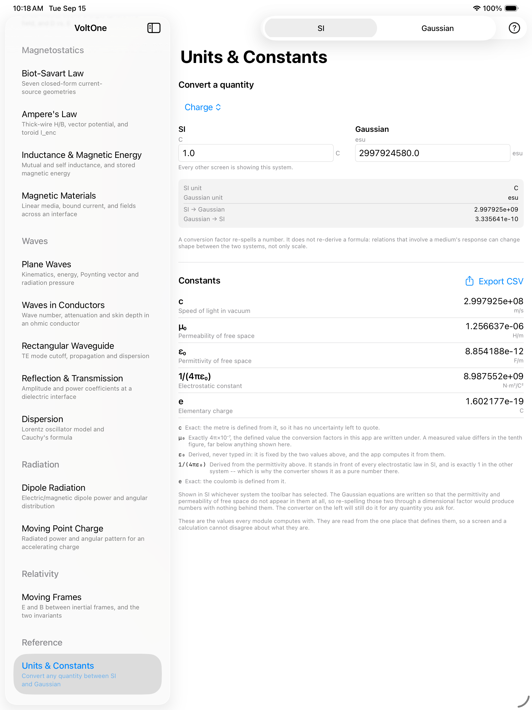
Each of these is a control on the screen. The app never picks one for you: a branch chosen silently is the easiest way for a correct calculation to hand you a wrong answer.
| Choice | Use it when |
|---|---|
| Which system you read in | Set on the toolbar, and it applies to every screen. The converter here is the exception: it shows both systems side by side at once, so you can see the factor rather than take it on trust. |
| Which quantity you are converting | Always, and it matters more than it looks. Two quantities can share an SI unit and still convert by different factors, because the two systems do not define them the same way. Picking the nearest-looking entry rather than the right one produces a plausible wrong number, and the surface charge density and the displacement — both coulombs per square metre — are the pair most likely to catch you. |
| Constants are shown in SI whichever system is selected | Always, and deliberately. Two of the five do not exist as dimensional quantities in the other system at all, so re-spelling them through a unit factor would produce numbers with nothing behind them. The converter will still show you a factor for any quantity you ask it for. |
| Symbol | What it is |
|---|---|
α | The nine digits of the speed of light, 2.99792458, taken as a bare number. Every electromagnetic conversion factor is written in terms of it, which is why they are exact rather than the rounded 3, 9 and 12 usually seen. |
c | Speed of light in vacuum. Fixed exactly, because the metre is defined from it rather than the other way round. |
ε₀ | Permittivity of free space. A dimensional constant in SI and nothing at all in the other system, where the equations are written so that it never appears. |
μ₀ | Permeability of free space. Same story as the permittivity: a dimensional constant on one side, absent on the other. |
1/(4πε₀) | The constant standing in front of every electrostatic law in SI. In the other system it is exactly the pure number 1 — that system was built to make it so. |
e | Elementary charge: the magnitude of the charge on one electron or proton. |
ε, μ | Permittivity and permeability of a material. In SI these carry units; in the other system they are pure numbers, and are what SI would call the relative permittivity and relative permeability. |
χₑ, χₘ | Electric and magnetic susceptibility: how strongly a linear material polarises or magnetises in response to a field. Dimensionless in both systems and still not the same number in both. |
P, M | Polarisation and magnetisation: the electric and magnetic dipole moment per unit volume of a material. |
D | Electric displacement. Defined from the field and the polarisation, and the two systems combine them differently. |
H | The auxiliary magnetic field. Defined from the magnetic field and the magnetisation, and again combined differently by the two systems. |
ρ, ρ_f, J, J_f | Charge density and current density; the subscript marks the free part, meaning the charge and current that are not bound into the material. |
σ | Used here for conductivity, how freely charge flows in response to a field. The same letter is used elsewhere for surface charge density; this module converts both, and they are separate entries in the picker for that reason. |
S | Poynting vector: energy carried by the fields per unit area per unit time. |
U | Energy stored in the fields. |
q, a | The charge and its acceleration in the radiated-power relation. |